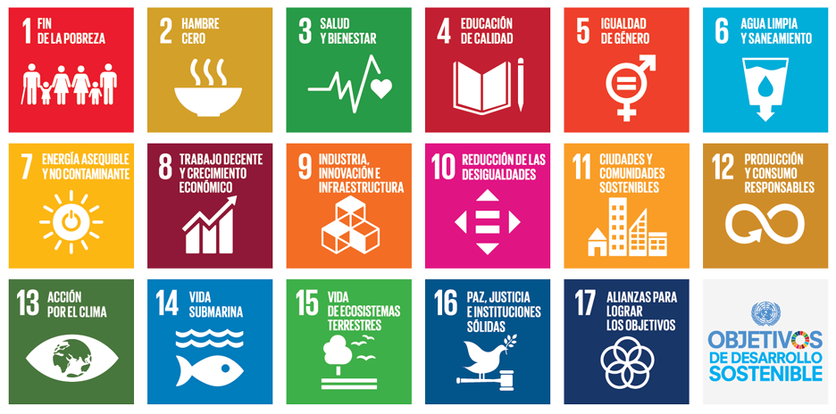

Desafíos y Soluciones para Reducir el Consumo Eléctrico Innecesario
¡Bienvenido a Energía Consciente!
En un mundo donde cada acción cuenta, estamos aquí para explorar juntos el poder de las elecciones cotidianas en la creación de un futuro sostenible. Energía Consciente se sumerge
en la problemática del consumo innecesario de energía eléctrica, abordando los desafíos que enfrentamos y proponiendo soluciones para construir un camino más eficiente y respetuoso con el medio ambiente.
Objetivos sostenibles, megatendencias y nuestra misión

Objetivos Sostenibles
Desde la reducción de la huella de carbono hasta la promoción de prácticas de consumo responsables, nos dedicamos a fomentar objetivos sostenibles clave.
Exploramos cómo pequeñas acciones pueden tener un impacto significativo en la preservación de nuestros recursos y en la construcción de un mundo más verde y equitativo.
Megatendencias
Sumérgete en las megatendencias que están dando forma al futuro de la energía y la sostenibilidad. Desde la transición hacia fuentes de energía renovable hasta la
revolución de la automatización en el hogar, exploramos las fuerzas que moldearán nuestro mañana.
Nuestra Misión
En Energía Consciente, buscamos no solo informar, sino también inspirar cambios positivos. Ofrecemos consejos prácticos para reducir el consumo de energía eléctrica,
destacamos las consecuencias de nuestras elecciones y proponemos una visión innovadora: la automatización inteligente del hogar como una solución efectiva para el ahorro energético.
Juntos, podemos transformar la manera en que consumimos energía y construir un mañana más brillante y sostenible.
Únete a nosotros en este viaje hacia la Energía Consciente.
¡Descubre Prácticos Consejos para un Consumo de Energía Más Consciente!
En esta sección, te ofrecemos consejos simples pero impactantes que puedes incorporar en tu vida diaria para reducir tu consumo de energía eléctrica y contribuir a un futuro más sostenible. Pequeñas acciones pueden marcar una gran diferencia. ¡Comienza hoy!
Opta por Luces LED
Cambia las bombillas tradicionales por luces LED de bajo consumo para reducir el uso de energía y prolongar la vida útil de las lámparas.
Desconecta Dispositivos en Modo Standby
Muchos dispositivos consumen energía incluso cuando están apagados. Desconéctalos o utiliza regletas con interruptores para cortar la energía por completo.
Aprovecha la Luz Natural
Abre cortinas y persianas durante el día para aprovechar la luz natural y reducir la necesidad de iluminación artificial.
Regula la Temperatura
Ajusta el termostato para mantener una temperatura confortable en casa. Pequeños cambios pueden tener un impacto significativo en el consumo de energía.
Revisa el Aislamiento
Asegúrate de que tu hogar esté bien aislado para evitar pérdidas de energía, especialmente en ventanas y puertas.
Programa tu Termostato

Utiliza un termostato programable para ajustar automáticamente la temperatura cuando no estás en casa, ahorrando energía de manera eficiente.
Apaga Electrodomésticos no Utilizados
Desde cargadores hasta electrodomésticos, apaga aquellos que no estén en uso para evitar el consumo innecesario de energía.
Opta por Electrodomésticos Eficientes
Al reemplazar electrodomésticos, elige modelos con clasificación de eficiencia energética para reducir el consumo a largo plazo.
Recuerda, cada pequeño paso cuenta. Comienza hoy a adoptar estos consejos y conviértete en un defensor del consumo consciente de energía. Juntos, podemos marcar la diferencia.
Consecuencias
¡Comprende las Consecuencias del Consumo Innecesario de Energía Eléctrica!
Aquí exploramos los impactos negativos que el consumo desmedido de energía eléctrica tiene en nuestro entorno y sociedad. Tomemos conciencia de las repercusiones y motivémonos para adoptar un enfoque más sostenible.
Consecuencias Ambientales
Emisiones de Carbono
El consumo excesivo contribuye a mayores emisiones de carbono, acelerando el cambio climático y afectando la calidad del aire.
Agotamiento de Recursos Naturales
La generación de electricidad a menudo implica la extracción de recursos naturales. Consumir menos ayuda a preservar estos valiosos recursos.
Contaminación del Agua y del Aire
Las plantas de energía pueden contaminar fuentes de agua y aire, afectando la salud de los ecosistemas y las comunidades circundantes.
Pérdida de Biodiversidad
El cambio climático y la contaminación pueden amenazar la biodiversidad, afectando a diversas especies y ecosistemas.
Consecuencias Sociales
Desigualdades Energéticas
El consumo desigual de energía a nivel global contribuye a disparidades económicas y de calidad de vida entre diferentes comunidades.
Impacto en la Salud
La contaminación del aire y otros efectos ambientales pueden tener consecuencias directas en la salud de las personas, especialmente en áreas urbanas.
Inestabilidad Energética
Dependencia excesiva de fuentes no sostenibles puede conducir a la inestabilidad en el suministro de energía, afectando a comunidades enteras.
Tomemos Acción Ahora
Al comprender estas consecuencias, estamos mejor equipados para tomar decisiones informadas y trabajar juntos hacia un futuro más sostenible. Descubre cómo pequeñas modificaciones en tu consumo de energía pueden marcar la diferencia. ¡La responsabilidad es de todos!
Soluciones
¡Transformemos el Futuro con Soluciones Innovadoras!
En esta sección, te presentamos enfoques prácticos y visionarios para contrarrestar el consumo innecesario de energía eléctrica. Desde cambios en el estilo de vida hasta propuestas tecnológicas, descubre cómo cada uno de nosotros puede ser parte de la solución.
Automatización Resiliente
Casa Inteligente
Adopta la automatización del hogar con dispositivos inteligentes que optimizan el uso de energía, regulando la iluminación, la climatización y otros electrodomésticos.
Sensores de Energía
Utiliza sensores para monitorear el consumo de energía en tiempo real, permitiéndote identificar áreas de mejora y hacer ajustes eficientes.
Sistemas de Gestión Energética
Implementa sistemas que gestionen y optimicen automáticamente el consumo de energía en todo el hogar, asegurando un uso eficiente en todo momento.
Prácticas Sostenibles
Energía Renovable

Investiga la posibilidad de instalar paneles solares o aprovechar otras fuentes de energía renovable para reducir la dependencia de fuentes no sostenibles.
Eficiencia de Electrodomésticos
Opta por electrodomésticos con clasificación de eficiencia energética, reduciendo el consumo a largo plazo.
Educación y Concientización
Comparte información sobre prácticas sostenibles con amigos, familiares y la comunidad para crear conciencia colectiva sobre el impacto del consumo de energía.
Pequeñas Acciones, Grandes Resultados
Cada elección cuenta. Al adoptar estas soluciones, contribuyes no solo a la eficiencia energética de tu hogar, sino también a la construcción de un futuro más sostenible para todos. ¡Descubre cómo puedes ser parte de la revolución energética!
¡Conectemos y Colaboremos para un Futuro Sostenible!
Si tienes preguntas, comentarios o simplemente quieres ser parte de la conversación sobre el consumo consciente de energía, ¡nos encantaría escucharte! Utiliza el formulario de contacto a continuación para ponerte en contacto con nosotros. También puedes encontrarnos en nuestras redes sociales para mantenerte actualizado sobre las últimas noticias y recursos.
Nombre: Mildred Nadxhielly Vega De Paz
Correo:mildred.vdp27@gmail.com
Celular: 9211188303
Fb
¡Esperamos saber de ti pronto! Juntos, podemos hacer una diferencia.